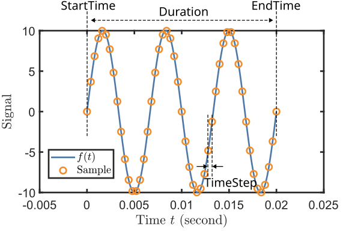

Waveform and WaveformList#
Waveform#
The Waveform class handles the software generations of waveforms. We define a waveform as a function of time:
where \(t\) represents time. For every concrete subclass of Waveform, a
TimeFunc() method is provided, which determines the waveform. The output of TimeFunc()
is a function handle representing
\(f(t)\), which takes a one-dimensional array \(t\) as the input. Once the TimeFunc()
method is provided, the samples of the waveform are calculated every time the Sample
property is called. The waveforms defined by the Waveform class are all finite with
definite StartTime and Duration. Meanwhile, A SamplingRate must be given by
users or client apps, from which a dependent property TimeStep is calculated as
\(\mathrm{TimeStep} = 1/\mathrm{SamplingRate}\). The figure below demonstrates their
relationship with Sample and waveform function \(f(t)\).

We note that Waveform itself is an abstract class. Therefore, it must be inherited by a concrete subclass then be
constructed. In the following, we give an example of constructing a SineWave (as a subclass of Waveform)
object:
sw = SineWave(...
amplitude = 20,...
duration = 1000e-3,...
startTime = 0e-3,...
frequency = 100); %Set parameters
sw.Frequency = 150; %Change parameters after construction
sw.SamplingRate = 1e4; %Change sampling rate
The function handle of the waveform can be obtained by calling the method TimeFunc(). Using the function handle, we can build
the waveform samples:
swf = sw.TimeFunc; %Extract the function handle
t = sw.StartTime : sw.TimeStep : sw.EndTime; %Define the time array
sample = swf(t); %call the function to calculate the samples
plot(t,sample) %plot the waveform
Alternatively, we can use the built-in dependent property Sample and the plot() method:
sample = sw.Sample; %call the dependent property to calculate the samples
sw.plot %plot the waveform using the plot method
In order to handle different types of waveforms, we include a few abstract subclasses of Waveform, namely
PeriodicWaveform, PartialPeriodicWaveform, ModulatedWaveform, and RandomWaveform.
Their inheritance relationship is shown in the following class diagram:

PeriodicWaveform#
The PeriodicWaveform abstract class extends Waveform to provide specialized functionality for waveforms that repeat with a defined frequency and period. This class serves as the foundation for common periodic signals like sine waves, square waves, and other repeating patterns.
Key Properties:
Amplitude: Peak-to-peak amplitude, typically in VoltsOffset: DC offset valueFrequency: Repetition frequency \(f\) in HzPhase: Phase offset \(\phi\) in radiansPeriod: Time period \(T = 1/f\) of one complete cycleNPeriod: Number of complete periods in the waveform durationNRepeat: Number of times the cycle segment repeats
Concrete Implementations:
SineWave#
Generates sinusoidal waveforms with the mathematical form:
% Basic sine wave
sine = SineWave(frequency = 1000, amplitude = 2.0, duration = 0.01);
sine.SamplingRate = 10000;
sine.plot();
% Sine wave with phase offset
sinePhase = SineWave(frequency = 500, amplitude = 1.0, phase = pi/4, duration = 0.02);
sinePhase.plot();
SquareWave#
Generates square wave signals with configurable duty cycle:
% Standard 50% duty cycle square wave
square = SquareWave(frequency = 1000, amplitude = 3.0, duration = 0.01);
square.plot();
% 25% duty cycle square wave for PWM applications
pwm = SquareWave(frequency = 500, amplitude = 5.0, dutyCycle = 0.25, duration = 0.02);
pwm.plot();
ConstantWave#
Creates constant (DC) waveforms:
% Simple constant voltage
constant = ConstantWave(amplitude = 2.5, duration = 0.01);
constant.plot();
% Constant with offset
constOffset = ConstantWave(amplitude = 1.0, offset = 3.0, duration = 0.005);
constOffset.plot();
Cycle-Based Optimization:
Periodic waveforms support hardware-optimized generation using cycle repetition:
sine = SineWave(frequency = 1000, amplitude = 1.0, duration = 1.0);
sine.NPeriodPerCycle = 5; % Use 5 periods per hardware cycle
% Access cycle-based properties
oneCycle = sine.SampleOneCycle; % Samples for one cycle segment
nRepeats = sine.NRepeat; % Number of times to repeat the cycle
cycleDuration = sine.DurationOneCycle; % Duration of one cycle segment
PartialPeriodicWaveform#
The PartialPeriodicWaveform abstract class extends Waveform to handle waveforms that have periodic behavior during part of their duration, with additional non-periodic segments before and/or after the periodic section. This is particularly useful for ramps, pulses, and complex control sequences.
Key Features:
Before segment: Non-periodic waveform before the periodic section
Periodic segment: Repeating waveform with defined cycles
After segment: Non-periodic waveform after the periodic section
Flexible transitions: Smooth connections between segments
Common Implementations:
LinearRamp#
Creates linear transitions between values:
% Basic linear ramp from 0 to 5V over 10ms
ramp = LinearRamp(startValue = 0, stopValue = 5, rampTime = 0.01);
ramp.SamplingRate = 10000;
ramp.plot();
% Negative ramp with longer duration
downRamp = LinearRamp(startValue = 10, stopValue = 2, rampTime = 0.02, duration = 0.05);
downRamp.plot();
TrapezoidalPulse#
Generates trapezoidal pulses with configurable rise, hold, and fall times:
% Trapezoidal pulse with 2ms rise, 5ms hold, 1ms fall
trapPulse = TrapezoidalPulse(amplitude = 3.0, riseTime = 0.002, ...
holdTime = 0.005, fallTime = 0.001);
trapPulse.plot();
Smooth Transitions#
For applications requiring smooth derivatives, several smooth transition classes are available:
% Hyperbolic tangent pulse for smooth edges
tanhPulse = TanhPulse(amplitude = 2.0, riseTime = 0.001, ...
holdTime = 0.01, fallTime = 0.001);
tanhPulse.plot();
% PCHIP (Piecewise Cubic Hermite) interpolated pulse
pchipPulse = PchipPulse(amplitude = 1.5, riseTime = 0.002, ...
holdTime = 0.008, fallTime = 0.002);
pchipPulse.plot();
Segment Access:
trapPulse = TrapezoidalPulse(amplitude = 2.0, riseTime = 0.001, ...
holdTime = 0.005, fallTime = 0.001);
% Access individual segments
beforeSamples = trapPulse.SampleBefore; % Rise portion
cycleSamples = trapPulse.SampleOneCycle; % Hold portion (periodic)
afterSamples = trapPulse.SampleAfter; % Fall portion
ModulatedWaveform#
The ModulatedWaveform abstract class extends Waveform to provide advanced signal modulation capabilities. This class enables amplitude modulation (AM), frequency modulation (FM), and phase modulation (PM) using other waveforms as modulation sources.
Key Properties:
AmplitudeModulation: Waveform for amplitude modulationFrequencyModulation: Waveform for frequency modulationPhaseModulation: Waveform for phase modulationCarrier parameters: Base frequency, amplitude, and phase
Concrete Implementations:
SineWaveModulated#
Creates modulated sine waves with flexible modulation schemes:
% Amplitude modulation example
carrier = SineWave(frequency = 1000, amplitude = 2.0, duration = 0.1);
modulator = SineWave(frequency = 50, amplitude = 0.5, duration = 0.1);
amWave = SineWaveModulated(frequency = 1000, amplitude = 2.0, duration = 0.1);
amWave.AmplitudeModulation = WaveformList("AM_mod", waveformOrigin = {modulator});
amWave.plot();
Frequency Modulation:
% Frequency modulation for frequency sweeps
fmModulator = LinearRamp(startValue = -100, stopValue = 100, rampTime = 0.05);
fmWave = SineWaveModulated(frequency = 1000, amplitude = 1.0, duration = 0.05);
fmWave.FrequencyModulation = WaveformList("FM_mod", waveformOrigin = {fmModulator});
fmWave.plot();
Combined Modulation:
% Simultaneous AM and FM
ampMod = SineWave(frequency = 10, amplitude = 0.3, duration = 0.2);
freqMod = SineWave(frequency = 5, amplitude = 50, duration = 0.2);
complexWave = SineWaveModulated(frequency = 1000, amplitude = 1.0, duration = 0.2);
complexWave.AmplitudeModulation = WaveformList("AM", waveformOrigin = {ampMod});
complexWave.FrequencyModulation = WaveformList("FM", waveformOrigin = {freqMod});
complexWave.plot();
Applications:
Chirped signals: For radar and sonar applications
Communication signals: AM/FM radio simulation
Control system testing: Variable frequency drive simulation
Spectroscopy: Frequency-modulated spectroscopy signals
RandomWaveform#
The RandomWaveform abstract class extends Waveform to provide random and pseudo-random signal generation capabilities. This is useful for noise generation, system testing, and stochastic signal simulation.
Concrete Implementations:
UniformRandom#
Generates uniformly distributed random values:
% Uniform random noise between -1 and +1
uniformNoise = UniformRandom(amplitude = 2.0, duration = 0.01);
uniformNoise.SamplingRate = 10000;
uniformNoise.plot();
% Offset uniform random signal
offsetUniform = UniformRandom(amplitude = 1.0, offset = 2.5, duration = 0.02);
offsetUniform.plot();
GaussianRandom#
Generates normally distributed random values:
% Gaussian white noise
gaussianNoise = GaussianRandom(amplitude = 1.0, duration = 0.01);
gaussianNoise.SamplingRate = 20000;
gaussianNoise.plot();
% Gaussian noise with DC offset
gaussianOffset = GaussianRandom(amplitude = 0.5, offset = 1.0, duration = 0.05);
gaussianOffset.plot();
Applications:
System testing: Adding noise to test signal processing algorithms
Channel simulation: Modeling communication channel noise
Monte Carlo methods: Random input generation for simulations
Dithering: Improving ADC/DAC performance with controlled noise
Random Seed Control:
% Reproducible random sequences
rng(12345); % Set random seed
noise1 = UniformRandom(amplitude = 1.0, duration = 0.01);
rng(12345); % Reset to same seed
noise2 = UniformRandom(amplitude = 1.0, duration = 0.01);
% noise1 and noise2 will be identical
WaveformList#
The WaveformList class manages collections of waveforms to create complex sequences and combinations. It supports two primary modes of operation: sequential concatenation and simultaneous superposition of multiple waveforms.
Key Properties:
ConcatMethod: “Sequential” or “Simultaneous” combination methodPatchMethod: “Continue” or “Constant” for gap fillingWaveformOrigin: Cell array of waveform objects to combineSamplingRate: Common sampling rate for all waveformsIsTriggerAdvance: Hardware trigger-advance mode support
Sequential WaveformList#
Sequential mode concatenates waveforms one after another in time, creating a single composite waveform sequence.
Basic Sequential Combination:
% Create individual waveforms
sine1 = SineWave(frequency = 1000, amplitude = 2.0, duration = 0.01);
const = ConstantWave(amplitude = 1.5, duration = 0.005);
ramp = LinearRamp(startValue = 0, stopValue = 3, rampTime = 0.008);
% Combine sequentially
seqList = WaveformList("SequentialDemo", ...
concatMethod = "Sequential", ...
waveformOrigin = {sine1, const, ramp}, ...
samplingRate = 10000);
seqList.plot();
Hardware-Optimized Sequences:
For efficient hardware generation, periodic waveforms can be optimized using cycle repetition:
% Long sine wave optimized for hardware
longSine = SineWave(frequency = 1000, amplitude = 1.0, duration = 1.0);
seqOptimized = WaveformList("HardwareOptimized", ...
waveformOrigin = {longSine}, ...
nPeriodPerCycle = 10, ...
isTriggerAdvance = true);
% Access hardware-ready segments
preparedTable = seqOptimized.WaveformPrepared;
% Table contains: Sample, PlayMode, NRepeat columns
Complex Control Sequences:
% Multi-stage experimental sequence
initRamp = LinearRamp(startValue = 0, stopValue = 5, rampTime = 0.1);
holdConst = ConstantWave(amplitude = 5.0, duration = 2.0);
modulated = SineWave(frequency = 100, amplitude = 1.0, duration = 0.5);
finalRamp = LinearRamp(startValue = 5, stopValue = 0, rampTime = 0.2);
experiment = WaveformList("ExperimentSequence", ...
waveformOrigin = {initRamp, holdConst, modulated, finalRamp}, ...
samplingRate = 50000);
experiment.plot();
Simultaneous WaveformList#
Simultaneous mode superimposes multiple waveforms that may have different timing, creating composite signals with overlapping components.
Basic Simultaneous Combination:
% Overlapping waveforms with different start times
sine1 = SineWave(frequency = 1000, amplitude = 1.0, duration = 0.02, startTime = 0);
sine2 = SineWave(frequency = 1500, amplitude = 0.5, duration = 0.015, startTime = 0.005);
pulse = TrapezoidalPulse(amplitude = 2.0, riseTime = 0.001, ...
holdTime = 0.01, fallTime = 0.001, startTime = 0.008);
simultaneous = WaveformList("SimultaneousDemo", ...
concatMethod = "Simultaneous", ...
waveformOrigin = {sine1, sine2, pulse}, ...
samplingRate = 20000);
simultaneous.plot();
Gap Filling Options:
When waveforms don’t completely overlap, gaps can be handled in different ways:
% Using constant gap filling
gapFilled = WaveformList("GapFilled", ...
concatMethod = "Simultaneous", ...
patchMethod = "Constant", ...
patchConstant = 0.5, ...
waveformOrigin = {sine1, sine2});
% Using continuation gap filling
continued = WaveformList("Continued", ...
concatMethod = "Simultaneous", ...
patchMethod = "Continue", ...
waveformOrigin = {sine1, sine2});
Multi-Channel Applications:
% Synchronized multi-channel output
channelA = SineWave(frequency = 1000, amplitude = 1.0, duration = 0.1);
channelB = SquareWave(frequency = 100, amplitude = 2.0, duration = 0.1);
channelC = LinearRamp(startValue = 0, stopValue = 5, rampTime = 0.1);
multiChannel = WaveformList("MultiChannel", ...
concatMethod = "Simultaneous", ...
waveformOrigin = {channelA, channelB, channelC});
% Generate synchronized samples for hardware output
samples = multiChannel.Sample;
Advanced Features:
% Access time function for mathematical operations
timeFunc = simultaneous.TimeFunc();
t = 0:0.0001:0.025;
values = timeFunc(t);
% Hardware compatibility
preparedWaveforms = simultaneous.WaveformPrepared;
totalSamples = simultaneous.NSample;
% Plotting with automatic downsampling for large datasets
simultaneous.plot(); % Automatically handles large sample counts